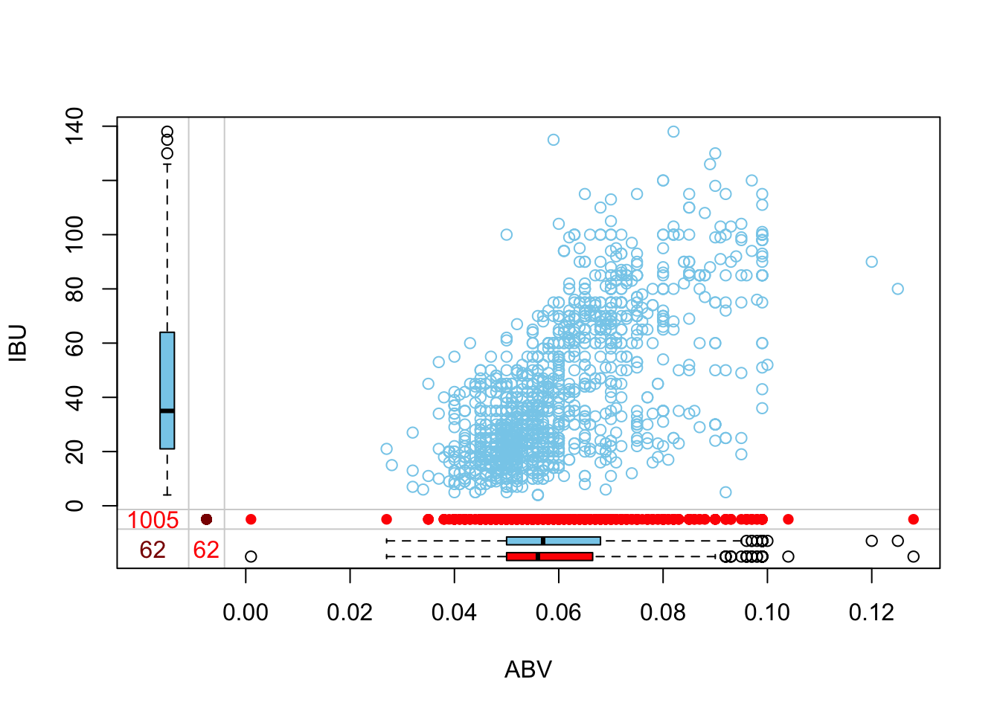

Case Study 1
Rick Fontenot
1/16/2021
For this case study we assume that our audience is the CEO and CFO of Budweiser (our client). They have hired us to answer 7 questions and beyond those general questions we will speculate / anticipate what may be of interest to them.
We will start by importing the following data for analysis:
Beers.csv: Name: Name of the beer. Beer_ID: Unique identifier of the beer. ABV: Alcohol by volume of the beer. IBU: International Bitterness Units of the beer. Brewery_ID: Brewery id associated with the beer. Style: Style of the beer. Ounces: Ounces of beer.
Breweries.csv: Brew_ID: Unique identifier of the brewery. Name: Name of the brewery. City: City where the brewery is located. State: U.S. State where the brewery is located.
Before getting into our analysis, you can explore some of the data with this interactive application: https://rickfontenot.shinyapps.io/BeerApp/
#Load Libraries needed for analysis
library(dplyr)##
## Attaching package: 'dplyr'## The following objects are masked from 'package:stats':
##
## filter, lag## The following objects are masked from 'package:base':
##
## intersect, setdiff, setequal, unionlibrary(tidyverse)## ── Attaching packages ─────────────────────────────────────────────────────────── tidyverse 1.3.0 ──## ✓ ggplot2 3.3.2 ✓ purrr 0.3.4
## ✓ tibble 3.0.3 ✓ stringr 1.4.0
## ✓ tidyr 1.1.2 ✓ forcats 0.5.0
## ✓ readr 1.4.0## ── Conflicts ────────────────────────────────────────────────────────────── tidyverse_conflicts() ──
## x dplyr::filter() masks stats::filter()
## x dplyr::lag() masks stats::lag()library(visdat)
library(GGally)## Registered S3 method overwritten by 'GGally':
## method from
## +.gg ggplot2library(usmap)
library(mice)##
## Attaching package: 'mice'## The following object is masked from 'package:stats':
##
## filter## The following objects are masked from 'package:base':
##
## cbind, rbindlibrary(VIM)## Loading required package: colorspace## Loading required package: grid## VIM is ready to use.## Suggestions and bug-reports can be submitted at: https://github.com/statistikat/VIM/issues##
## Attaching package: 'VIM'## The following object is masked from 'package:datasets':
##
## sleeplibrary(plotly)##
## Attaching package: 'plotly'## The following object is masked from 'package:ggplot2':
##
## last_plot## The following object is masked from 'package:stats':
##
## filter## The following object is masked from 'package:graphics':
##
## layoutlibrary(ggpubr)
library(caret)## Loading required package: lattice##
## Attaching package: 'caret'## The following object is masked from 'package:purrr':
##
## liftlibrary(e1071)
library(class)
library(maps)##
## Attaching package: 'maps'## The following object is masked from 'package:purrr':
##
## maplibrary(mapproj)
library(stringr)
library(ggplot2)
library(ggthemes)
library(table1)##
## Attaching package: 'table1'## The following objects are masked from 'package:base':
##
## units, units<-Load Theme for plots
theme_set(theme_fivethirtyeight())
theme_update(axis.title = element_text()) #the default for fivethirtyeight is to not show axis labels, this removes that default so we can choose to specify and display axis titles
theme_update(plot.title = element_text(hjust = 0.5)) # changing default to center all titlesLoad and Merge initial data sets provided
beers = read.csv("https://raw.githubusercontent.com/rickfontenot/DS6306_Study1/main/Beers.csv", header = TRUE)
breweries = read.csv("https://raw.githubusercontent.com/rickfontenot/DS6306_Study1/main/Breweries.csv", header = TRUE)
dim(beers) #2410 observations x 7 columns## [1] 2410 7dim(breweries) #558 observations x 4 columns## [1] 558 4sum(is.na(beers$Brewery_id)) #there are no missing values on the merge var## [1] 0sum(is.na(breweries$Brew_ID)) #there are no missing values on the merge var## [1] 0beers <- beers %>% rename(Beer_Name = Name) #both dataframes have "Name"
breweries <- breweries %>% rename(Brewery_Name = Name)
view(beers)
beerbrew <- merge(beers,breweries, by.x = "Brewery_id", by.y = "Brew_ID")
head(beerbrew)## Brewery_id Beer_Name Beer_ID ABV IBU Style Ounces
## 1 1 Get Together 2692 0.045 50 American IPA 16
## 2 1 Maggie's Leap 2691 0.049 26 Milk / Sweet Stout 16
## 3 1 Wall's End 2690 0.048 19 English Brown Ale 16
## 4 1 Pumpion 2689 0.060 38 Pumpkin Ale 16
## 5 1 Stronghold 2688 0.060 25 American Porter 16
## 6 1 Parapet ESB 2687 0.056 47 Extra Special / Strong Bitter (ESB) 16
## Brewery_Name City State
## 1 NorthGate Brewing Minneapolis MN
## 2 NorthGate Brewing Minneapolis MN
## 3 NorthGate Brewing Minneapolis MN
## 4 NorthGate Brewing Minneapolis MN
## 5 NorthGate Brewing Minneapolis MN
## 6 NorthGate Brewing Minneapolis MNAdd Features to the individual beer level data frame
style <- beerbrew %>% count(Style)
view(style)
#There are 100 styles of craft beer, group them into broader classes for analysis by class
beerbrew["Class"] <- ifelse(str_detect(beerbrew$Style,"IPA"),"IPA", ifelse(str_detect(beerbrew$Style,"Ale"),"Ale", ifelse(str_detect(beerbrew$Style,"Lager"),"Lager", ifelse(str_detect(beerbrew$Style,"Stout"),"Stout", ifelse(str_detect(beerbrew$Style,"Pilsner"),"Pilsner", ifelse(str_detect(beerbrew$Style,"Pilsener"),"Pilsner", ifelse(str_detect(beerbrew$Style,"Porter"),"Porter", ifelse(str_detect(beerbrew$Style,"APA"),"APA", ifelse(str_detect(beerbrew$Style,"Cider"),"Cider", ifelse(str_detect(beerbrew$Style,"Witbier"),"Witbier", ifelse(str_detect(beerbrew$Style,"Kölsch"),"Kölsch", ifelse(str_detect(beerbrew$Style,"Fruit"),"Fruit", ifelse(str_detect(beerbrew$Style,"Hefeweizen"),"Hefeweizen", ifelse(str_detect(beerbrew$Style,"Oktoberfest"),"Oktoberfest", ifelse(str_detect(beerbrew$Style,"Bitter"),"Bitter",
"Other")))))))))))))))
beerbrew %>%ggplot(aes(x = Class)) + geom_bar() +
ggtitle("Distribution of Beer Classes") + coord_flip() + xlab("Class") + ylab("Count")Investigate NA values to determine what needs resolution
aggr_plot <- aggr(beerbrew, col=c('navyblue','red'), numbers=TRUE, sortVars=TRUE, labels=names(beerbrew), cex.axis=.7, gap=3, ylab=c("Percent data missing","Combinations Missing"))##
## Variables sorted by number of missings:
## Variable Count
## IBU 0.41701245
## ABV 0.02572614
## Brewery_id 0.00000000
## Beer_Name 0.00000000
## Beer_ID 0.00000000
## Style 0.00000000
## Ounces 0.00000000
## Brewery_Name 0.00000000
## City 0.00000000
## State 0.00000000
## Class 0.00000000marginplot(beerbrew[c(4,5)])
view(beerbrew)
#IBU values are missing for 42% of the beers and needs resolution, only 2.6% of beers are missing ABV, and all other variables are clean with no missing valuesMethod #1 for imputing NA values, with Predictive Mean Mean Matching
tempData <- mice(beerbrew,m=5,maxit=50,meth='pmm',seed=500)##
## iter imp variable
## 1 1 ABV IBU
## 1 2 ABV IBU
## 1 3 ABV IBU
## 1 4 ABV IBU
## 1 5 ABV IBU
## 2 1 ABV IBU
## 2 2 ABV IBU
## 2 3 ABV IBU
## 2 4 ABV IBU
## 2 5 ABV IBU
## 3 1 ABV IBU
## 3 2 ABV IBU
## 3 3 ABV IBU
## 3 4 ABV IBU
## 3 5 ABV IBU
## 4 1 ABV IBU
## 4 2 ABV IBU
## 4 3 ABV IBU
## 4 4 ABV IBU
## 4 5 ABV IBU
## 5 1 ABV IBU
## 5 2 ABV IBU
## 5 3 ABV IBU
## 5 4 ABV IBU
## 5 5 ABV IBU
## 6 1 ABV IBU
## 6 2 ABV IBU
## 6 3 ABV IBU
## 6 4 ABV IBU
## 6 5 ABV IBU
## 7 1 ABV IBU
## 7 2 ABV IBU
## 7 3 ABV IBU
## 7 4 ABV IBU
## 7 5 ABV IBU
## 8 1 ABV IBU
## 8 2 ABV IBU
## 8 3 ABV IBU
## 8 4 ABV IBU
## 8 5 ABV IBU
## 9 1 ABV IBU
## 9 2 ABV IBU
## 9 3 ABV IBU
## 9 4 ABV IBU
## 9 5 ABV IBU
## 10 1 ABV IBU
## 10 2 ABV IBU
## 10 3 ABV IBU
## 10 4 ABV IBU
## 10 5 ABV IBU
## 11 1 ABV IBU
## 11 2 ABV IBU
## 11 3 ABV IBU
## 11 4 ABV IBU
## 11 5 ABV IBU
## 12 1 ABV IBU
## 12 2 ABV IBU
## 12 3 ABV IBU
## 12 4 ABV IBU
## 12 5 ABV IBU
## 13 1 ABV IBU
## 13 2 ABV IBU
## 13 3 ABV IBU
## 13 4 ABV IBU
## 13 5 ABV IBU
## 14 1 ABV IBU
## 14 2 ABV IBU
## 14 3 ABV IBU
## 14 4 ABV IBU
## 14 5 ABV IBU
## 15 1 ABV IBU
## 15 2 ABV IBU
## 15 3 ABV IBU
## 15 4 ABV IBU
## 15 5 ABV IBU
## 16 1 ABV IBU
## 16 2 ABV IBU
## 16 3 ABV IBU
## 16 4 ABV IBU
## 16 5 ABV IBU
## 17 1 ABV IBU
## 17 2 ABV IBU
## 17 3 ABV IBU
## 17 4 ABV IBU
## 17 5 ABV IBU
## 18 1 ABV IBU
## 18 2 ABV IBU
## 18 3 ABV IBU
## 18 4 ABV IBU
## 18 5 ABV IBU
## 19 1 ABV IBU
## 19 2 ABV IBU
## 19 3 ABV IBU
## 19 4 ABV IBU
## 19 5 ABV IBU
## 20 1 ABV IBU
## 20 2 ABV IBU
## 20 3 ABV IBU
## 20 4 ABV IBU
## 20 5 ABV IBU
## 21 1 ABV IBU
## 21 2 ABV IBU
## 21 3 ABV IBU
## 21 4 ABV IBU
## 21 5 ABV IBU
## 22 1 ABV IBU
## 22 2 ABV IBU
## 22 3 ABV IBU
## 22 4 ABV IBU
## 22 5 ABV IBU
## 23 1 ABV IBU
## 23 2 ABV IBU
## 23 3 ABV IBU
## 23 4 ABV IBU
## 23 5 ABV IBU
## 24 1 ABV IBU
## 24 2 ABV IBU
## 24 3 ABV IBU
## 24 4 ABV IBU
## 24 5 ABV IBU
## 25 1 ABV IBU
## 25 2 ABV IBU
## 25 3 ABV IBU
## 25 4 ABV IBU
## 25 5 ABV IBU
## 26 1 ABV IBU
## 26 2 ABV IBU
## 26 3 ABV IBU
## 26 4 ABV IBU
## 26 5 ABV IBU
## 27 1 ABV IBU
## 27 2 ABV IBU
## 27 3 ABV IBU
## 27 4 ABV IBU
## 27 5 ABV IBU
## 28 1 ABV IBU
## 28 2 ABV IBU
## 28 3 ABV IBU
## 28 4 ABV IBU
## 28 5 ABV IBU
## 29 1 ABV IBU
## 29 2 ABV IBU
## 29 3 ABV IBU
## 29 4 ABV IBU
## 29 5 ABV IBU
## 30 1 ABV IBU
## 30 2 ABV IBU
## 30 3 ABV IBU
## 30 4 ABV IBU
## 30 5 ABV IBU
## 31 1 ABV IBU
## 31 2 ABV IBU
## 31 3 ABV IBU
## 31 4 ABV IBU
## 31 5 ABV IBU
## 32 1 ABV IBU
## 32 2 ABV IBU
## 32 3 ABV IBU
## 32 4 ABV IBU
## 32 5 ABV IBU
## 33 1 ABV IBU
## 33 2 ABV IBU
## 33 3 ABV IBU
## 33 4 ABV IBU
## 33 5 ABV IBU
## 34 1 ABV IBU
## 34 2 ABV IBU
## 34 3 ABV IBU
## 34 4 ABV IBU
## 34 5 ABV IBU
## 35 1 ABV IBU
## 35 2 ABV IBU
## 35 3 ABV IBU
## 35 4 ABV IBU
## 35 5 ABV IBU
## 36 1 ABV IBU
## 36 2 ABV IBU
## 36 3 ABV IBU
## 36 4 ABV IBU
## 36 5 ABV IBU
## 37 1 ABV IBU
## 37 2 ABV IBU
## 37 3 ABV IBU
## 37 4 ABV IBU
## 37 5 ABV IBU
## 38 1 ABV IBU
## 38 2 ABV IBU
## 38 3 ABV IBU
## 38 4 ABV IBU
## 38 5 ABV IBU
## 39 1 ABV IBU
## 39 2 ABV IBU
## 39 3 ABV IBU
## 39 4 ABV IBU
## 39 5 ABV IBU
## 40 1 ABV IBU
## 40 2 ABV IBU
## 40 3 ABV IBU
## 40 4 ABV IBU
## 40 5 ABV IBU
## 41 1 ABV IBU
## 41 2 ABV IBU
## 41 3 ABV IBU
## 41 4 ABV IBU
## 41 5 ABV IBU
## 42 1 ABV IBU
## 42 2 ABV IBU
## 42 3 ABV IBU
## 42 4 ABV IBU
## 42 5 ABV IBU
## 43 1 ABV IBU
## 43 2 ABV IBU
## 43 3 ABV IBU
## 43 4 ABV IBU
## 43 5 ABV IBU
## 44 1 ABV IBU
## 44 2 ABV IBU
## 44 3 ABV IBU
## 44 4 ABV IBU
## 44 5 ABV IBU
## 45 1 ABV IBU
## 45 2 ABV IBU
## 45 3 ABV IBU
## 45 4 ABV IBU
## 45 5 ABV IBU
## 46 1 ABV IBU
## 46 2 ABV IBU
## 46 3 ABV IBU
## 46 4 ABV IBU
## 46 5 ABV IBU
## 47 1 ABV IBU
## 47 2 ABV IBU
## 47 3 ABV IBU
## 47 4 ABV IBU
## 47 5 ABV IBU
## 48 1 ABV IBU
## 48 2 ABV IBU
## 48 3 ABV IBU
## 48 4 ABV IBU
## 48 5 ABV IBU
## 49 1 ABV IBU
## 49 2 ABV IBU
## 49 3 ABV IBU
## 49 4 ABV IBU
## 49 5 ABV IBU
## 50 1 ABV IBU
## 50 2 ABV IBU
## 50 3 ABV IBU
## 50 4 ABV IBU
## 50 5 ABV IBU## Warning: Number of logged events: 6xyplot(tempData,ABV ~ IBU,pch=18,cex=1)densityplot(tempData)#The distribution for all 5 iterations of replacement values mimic the distribution of the overall available data. But is this a good estimation for each particular beer with missing info?
beerbrew_imputed <- complete(tempData,1)
#confirming all missing values were replaced, no more NA's shown
md.pattern(beerbrew_imputed)## /\ /\
## { `---' }
## { O O }
## ==> V <== No need for mice. This data set is completely observed.
## \ \|/ /
## `-----'## Brewery_id Beer_Name Beer_ID ABV IBU Style Ounces Brewery_Name City State Class
## 2410 1 1 1 1 1 1 1 1 1 1 1 0
## 0 0 0 0 0 0 0 0 0 0 0 0aggr_plot <- aggr(beerbrew_imputed, col=c('navyblue','red'), numbers=TRUE, sortVars=TRUE, labels=names(beerbrew_imputed), cex.axis=.7, gap=3, ylab=c("Histogram of missing data","Pattern"))##
## Variables sorted by number of missings:
## Variable Count
## Brewery_id 0
## Beer_Name 0
## Beer_ID 0
## ABV 0
## IBU 0
## Style 0
## Ounces 0
## Brewery_Name 0
## City 0
## State 0
## Class 0#Merge imputed value columns into main data frame
colnames(beerbrew_imputed)[4] = "ABV.pmm.imputed"
colnames(beerbrew_imputed)[5] = "IBU.pmm.imputed"
temp <- beerbrew_imputed %>% select(Beer_ID, ABV.pmm.imputed, IBU.pmm.imputed)
beerbrew <- left_join(beerbrew, temp,by = "Beer_ID")Method #2 for imputing values: Study distributions of IBU and ABV by Class of beer rather than using predictive mean for distribution of all beer style combined
beerbrew %>% ggplot(aes(x = Class, y = IBU)) +
geom_boxplot() +
ggtitle("Boxplot of IBU by Beer Class") +
xlab("Class") + ylab("IBU") + coord_flip()## Warning: Removed 1005 rows containing non-finite values (stat_boxplot).beerbrew %>% ggplot(aes(x = Class, y = ABV)) +
geom_boxplot() +
ggtitle("Boxplot of ABV by Beer Class") +
xlab("Class") + ylab("ABV") + coord_flip()## Warning: Removed 62 rows containing non-finite values (stat_boxplot).#The IBU and ABV distributions are distinctly different for each class of beer. Instead of imputation method pmm, replace na with the mean IBU and ABV for the Class of beer it belongs too
impute.mean <- function(x) replace(x, is.na(x), mean(x, na.rm = TRUE))
beerbrew <- beerbrew %>% group_by(Class) %>%
mutate(
IBU.class.imputed = impute.mean(IBU),
ABV.class.imputed = impute.mean(ABV)
)
beerbrew %>% ggplot(aes(x = IBU.pmm.imputed, y = IBU.class.imputed)) +
geom_point(position = "jitter") +
ggtitle("IBU Imputed PMM vs. Class Mean methods") +
xlab("IBU (PMM imputed)") + ylab("IBU (Class Mean imputed")## Warning: Removed 37 rows containing missing values (geom_point).beerbrew %>% ggplot(aes(x = ABV.pmm.imputed, y = ABV.class.imputed)) +
geom_point(position = "jitter") +
ggtitle("ABV Imputed PMM vs. Class Mean methods") +
xlab("ABV (PMM imputed)") + ylab("ABV (Class Mean imputed")
Create State Level table of summary statistics
StateData = breweries %>% count(State) #count up the breweries in each state.
Original <- setNames(aggregate(cbind(IBU,ABV)~State, beerbrew, median,na.action = na.omit), c("State","IBU.median","ABV.median"))
PMM <- setNames(aggregate(cbind(IBU.pmm.imputed,ABV.pmm.imputed)~State, beerbrew, median,na.action = na.omit), c("State","IBU.pmm.median","ABV.pmm.median"))
Class <- setNames(aggregate(cbind(IBU.class.imputed,ABV.class.imputed)~State, beerbrew, median,na.action = na.omit), c("State","IBU.class.median","ABV.class.median"))
StateData <- merge(merge(Original,PMM,all=T),Class,all=T)
Brewery.count = breweries %>% count(State) #count up the breweries in each state.
Brewery.count <- Brewery.count %>% rename(Breweries = n)
StateData <- merge(StateData,Brewery.count)
view(StateData)Add external data and features to the State level tables including, consumption, population, and consumption per capita. This will be used to explore additional analysis beyond the questions Budweiser asked us.
#load beer consumption per capita data
per.capita <- read.csv("https://github.com/rickfontenot/DS6306_Study1/raw/main/NIH_per_capita.csv", header = TRUE)
colnames(per.capita)[1] = "Rank.percapita"
#load beer total consumption
total.consumption <- read.csv("https://github.com/rickfontenot/DS6306_Study1/raw/main/NIH_total_consumption.csv", header = TRUE)
colnames(total.consumption)[1] = "Rank.total"
#load census population data
census2019 <- read.csv("https://raw.githubusercontent.com/rickfontenot/DS6306_Study1/main/nst-est2019.csv", header = TRUE)
#rename columns of interest and remove all others
census2019 <- census2019 %>% rename('State' = 1)
census2019 <- census2019 %>% rename("pop.2019" = "X.11")
census2019 <- subset(census2019, select = c("State", "pop.2019"))
#remove header rows and regions other than states
census2019 <- census2019[-c(1,2,3), ]
census2019 <- census2019[-c(1:5, 57:63), ]
#remove leading dots to properly format State labels
census2019$State <- str_replace_all(census2019$State, "^\\.", "")
#Merge Consumption and population data
consumption_pop <- merge(per.capita,census2019)
total.consumption$State[total.consumption$State == "Dist. of Columb."] <- "District of Columbia"
consumption_pop <- merge(consumption_pop,total.consumption,by="State")
#Add state abbreviations to merge with State Data Frame
lookup = data.frame(abb = state.abb, State = state.name) #makes a data frame with State name and abbreviation.
lookup$abb <- trimws(lookup$abb)
#Add District of Columbia
lookup <- lookup %>% add_row(abb= "DC", State ="District of Columbia")
temp <- merge(consumption_pop,lookup)
#Rename State to "abb" and trim for merge
colnames(StateData)[1] = "abb"
StateData$abb <- trimws(StateData$abb)
StateData <- merge(StateData,temp,by="abb",all=T)
StateData$Million_Gallons_Overall = as.numeric(StateData$Million_Gallons_Overall)## Warning: NAs introduced by coercionStateData$pop.2019 <- str_replace_all(StateData$pop.2019, ",", "")
StateData$pop.2019 <- as.numeric(StateData$pop.2019)
#calculate #Breweries per capita
StateData["Breweries.percapita"] = StateData$Breweries / (StateData$pop.2019/1000000)
view(StateData)Create a State Mapping data frame so that all summary statistics can be geographically plotted
states <- map_data("state")
colnames(states)[5] = "State"
StateData$State <- tolower(StateData$State)
StateMapData <- merge(states,StateData, by="State", all.x=T)
StateMapData <- StateMapData[order(StateMapData$order),]
view(StateMapData)Question 1: How many breweries are present in each state?
#bar chart ordered by rank of most breweries
StateData %>% ggplot(aes(x=reorder(abb, -Breweries), y=Breweries)) +
geom_bar(stat = "identity", position = "dodge") + theme(plot.title= element_text(hjust = 0.5),axis.text.x=element_text(angle=90,size = rel(.6),margin = margin(.05, unit = "cm"),vjust =0)) +
labs(title = "Number of Breweries by State", y = "Number of Breweries",x= 'State')#geographical heat map of same data
ggplot(StateMapData, aes(x=long,y=lat,group=group))+
geom_polygon(aes(fill=Breweries))+
geom_path()+
scale_fill_gradientn(colours=rev(heat.colors(10)),na.value="grey90")+ggtitle("Number of Breweries by State")+
theme(axis.title.x=element_blank(), axis.text.x=element_blank(), axis.ticks.x=element_blank()) + theme(axis.title.y=element_blank(), axis.text.y=element_blank(), axis.ticks.y=element_blank()) + theme(axis.line = element_blank(), panel.grid.major = element_blank(), panel.grid.minor = element_blank(), panel.border = element_blank(), panel.background = element_blank()) +coord_map()Answer 1: Colorado has the most breweries with 47. Other than Colorado, states with most breweries are clustered along US border and coasts. The top 5 brewery count states account for 31% of total craft breweris in the US.
Question 2: Merge beer data with the breweries data. Print the first 6 observations and the last six observations to check the merged file. (RMD only, this does not need to be included in the presentation or the deck.)
#merge completed in section of code above, here we will print the first/last 6 obervations
head(beerbrew,6)## # A tibble: 6 x 15
## # Groups: Class [5]
## Brewery_id Beer_Name Beer_ID ABV IBU Style Ounces Brewery_Name City State Class
## <int> <chr> <int> <dbl> <int> <chr> <dbl> <chr> <chr> <chr> <chr>
## 1 1 Get Toge… 2692 0.045 50 Amer… 16 "NorthGate … Minn… " MN" IPA
## 2 1 Maggie's… 2691 0.049 26 Milk… 16 "NorthGate … Minn… " MN" Stout
## 3 1 Wall's E… 2690 0.048 19 Engl… 16 "NorthGate … Minn… " MN" Ale
## 4 1 Pumpion 2689 0.06 38 Pump… 16 "NorthGate … Minn… " MN" Ale
## 5 1 Strongho… 2688 0.06 25 Amer… 16 "NorthGate … Minn… " MN" Port…
## 6 1 Parapet … 2687 0.056 47 Extr… 16 "NorthGate … Minn… " MN" Bitt…
## # … with 4 more variables: ABV.pmm.imputed <dbl>, IBU.pmm.imputed <int>, IBU.class.imputed <dbl>,
## # ABV.class.imputed <dbl>tail(beerbrew,6)## # A tibble: 6 x 15
## # Groups: Class [5]
## Brewery_id Beer_Name Beer_ID ABV IBU Style Ounces Brewery_Name City State Class
## <int> <chr> <int> <dbl> <int> <chr> <dbl> <chr> <chr> <chr> <chr>
## 1 556 Pilsner … 98 0.055 NA Germ… 12 Ukiah Brewi… Ukiah " CA" Pils…
## 2 557 Heinniew… 52 0.049 NA Hefe… 12 Butternuts … Garr… " NY" Hefe…
## 3 557 Snapperh… 51 0.068 NA Amer… 12 Butternuts … Garr… " NY" IPA
## 4 557 Moo Thun… 50 0.049 NA Milk… 12 Butternuts … Garr… " NY" Stout
## 5 557 Porkslap… 49 0.043 NA Amer… 12 Butternuts … Garr… " NY" Ale
## 6 558 Urban Wi… 30 0.049 NA Engl… 12 Sleeping La… Anch… " AK" Ale
## # … with 4 more variables: ABV.pmm.imputed <dbl>, IBU.pmm.imputed <int>, IBU.class.imputed <dbl>,
## # ABV.class.imputed <dbl>Question 3: Address the missing values in each column.See above for imputing using two methods. Here we will compare methods and decide which is best to use for subsequent analyses
#stacked histogram comparing imputation methods, transform wide to long first
imputed.IBU <- beerbrew %>% select(Beer_ID,Class,IBU,IBU.pmm.imputed,IBU.class.imputed)
colnames(imputed.IBU)[3] = "Original"
colnames(imputed.IBU)[4] = "PMM"
colnames(imputed.IBU)[5] = "Class-mean"
imputed.IBU <- imputed.IBU %>% pivot_longer(c(Original, PMM, `Class-mean`), names_to = "Method", values_to = "IBU")
imputed.IBU %>% ggplot(aes(x = IBU, fill=Method)) + geom_histogram() +
ggtitle("IBU by Imputation Method") + xlab("IBU") + ylab("Count") +facet_wrap(~Method,ncol=1)## `stat_bin()` using `bins = 30`. Pick better value with `binwidth`.## Warning: Removed 1042 rows containing non-finite values (stat_bin).imputed.ABV <- beerbrew %>% select(Beer_ID,Class,ABV,ABV.pmm.imputed,ABV.class.imputed)
colnames(imputed.ABV)[3] = "Original"
colnames(imputed.ABV)[4] = "PMM"
colnames(imputed.ABV)[5] = "Class-mean"
imputed.ABV <- imputed.ABV %>% pivot_longer(c(Original, PMM, `Class-mean`), names_to = "Method", values_to = "ABV")
imputed.ABV %>% ggplot(aes(x = ABV, fill=Method)) + geom_histogram() +
ggtitle("ABV by Imputation Method") + xlab("ABV") + ylab("Count") +facet_wrap(~Method,ncol=1)## `stat_bin()` using `bins = 30`. Pick better value with `binwidth`.## Warning: Removed 62 rows containing non-finite values (stat_bin).#IBU vs. ABV relationship by Imputation method
imputed <- merge(imputed.IBU,imputed.ABV,all=T)
imputed %>% ggplot(mapping=aes(y=IBU, x=ABV,color=Method)) + geom_point(size=0.5, position=position_jitter(width = 0.001, height = 1))+ geom_smooth(method="lm",se=FALSE,size=1)+ labs(title="Correlation between ABV and IBU")## `geom_smooth()` using formula 'y ~ x'## Warning: Removed 1042 rows containing non-finite values (stat_smooth).## Warning: Removed 1042 rows containing missing values (geom_point).Answer 3: The PMM method of imputing mimcs the overall distribution of available data points but does not seem appropriate for each invidual missing point as it replaces with values not accurate for the type of beer that has missing values. The Class-mean method seems more appropriate and will be used for subsequent distribution analysis and summary statitistics. However it does not seema appropriate for relationship analysis, so we will omit NA’s for correlations and models
Question 4: Compute the median alcohol content and international bitterness unit for each state. Plot a bar chart to compare.
#use Class Mean imputed values for medians
StateData %>% ggplot(aes(x=reorder(abb, -IBU.class.median), y=IBU.class.median)) +
geom_bar(stat = "identity", position = "dodge") + theme(plot.title= element_text(hjust = 0.5),axis.text.x=element_text(angle=90,size = rel(.6),margin = margin(.05, unit = "cm"),vjust =0)) +
labs(title = "Median IBU by State", y = "Median IBU",x= 'State')StateData %>% ggplot(aes(x=reorder(abb, -ABV.class.median), y=ABV.class.median)) +
geom_bar(stat = "identity", position = "dodge") + theme(plot.title= element_text(hjust = 0.5),axis.text.x=element_text(angle=90,size = rel(.6),margin = margin(.05, unit = "cm"),vjust =0)) +
labs(title = "Median ABV by State", y = "Median ABV",x= 'State')
Answer 4: For states with sufficiently larger sample sizes median IBU in the mid-30’s. The two outlier states with high median IBU are small samples. They only have 2 beers per state, which happen to be high IBU styles. If they brewed more beers of multiple varieties, they would likely have median IBU more similar to the rest of states.
Almost all states have a median ABV in the 5% to 6% Range. Utah, the one outlier state with low ABV has to do with a state law limiting the max ABV to 4%
Question 5: Which state has the maximum alcoholic (ABV) beer? Which state has the most bitter (IBU) beer?
max.abv <- beerbrew %>% filter(ABV==max(beerbrew$ABV,na.rm=TRUE)) %>% select(Beer_Name,ABV,Class,Style,State,Brewery_Name)
max.abv## # A tibble: 1 x 6
## # Groups: Class [1]
## Beer_Name ABV Class Style State Brewery_Name
## <chr> <dbl> <chr> <chr> <chr> <chr>
## 1 Lee Hill Series Vol. 5 - Belgian Style Quad… 0.128 Other Quadrupel (Qu… " CO" Upslope Brewing Com…#Answer Colorado, Lee Hill Series Vol.5, ABV = 0.128, Upslope Brewing Company
max.ibu <- beerbrew %>% filter(IBU==max(beerbrew$IBU,na.rm=TRUE)) %>% select(Beer_Name,IBU,Class,Style,State,Brewery_Name)
max.ibu## # A tibble: 1 x 6
## # Groups: Class [1]
## Beer_Name IBU Class Style State Brewery_Name
## <chr> <int> <chr> <chr> <chr> <chr>
## 1 Bitter Bitch Imperial IPA 138 IPA American Double / Imperial IPA " OR" Astoria Brewing Company#Answer Oregon, Bitter Bitch Imperial, IBU = 138Answer 5: Max ABV beer = 12.8% by Upslope Brewing Company, Colorado Lee Hill Series Vol. 5 - Belgian Style Quadrupel Ale Brewed with a select strain of Belgian yeast and traditional Belgian candy syrup, the beer matured over six months to mellow and soften its character.
Max IBU Beer = 138 by Astoria Brewing Company, Oregon Bitter Bitch Imperial IPA A big IPA with a huge bite. Peoples Award Winner 3 Years running at the Spring Beer & Wine Festival, Portland, OR.
Question 6: Comment on the summary statistics and distribution of the ABV variable.
summary(beerbrew$ABV)## Min. 1st Qu. Median Mean 3rd Qu. Max. NA's
## 0.00100 0.05000 0.05600 0.05977 0.06700 0.12800 62#Quartiles 1st = 0.0500, Median = 0.056, Mean = 0.5977, 3rd = 0.067, Max = 0.128, NA's =62
#other class of Beers makes up a significant portion of the outliers see box plot below
#taking a look at the quantiles with boxplots This shows how the "other" category has most the outliers, Makes sense that non standard beers would fall into outlier position. Extreme low ABV and high
beerbrew %>% select(ABV, Class) %>% ggplot(aes(y=ABV)) +
geom_boxplot(outlier.colour = "#200804", outlier.shape = 6, outlier.size = 2)+
geom_jitter(aes(x=Class),color="black", size=0.4, alpha=.5)+
coord_flip() +
labs(title= "Distribution of ABV" , x = "All Beers", y= "Alcohol by Volume",
caption = "Outliers are represented by triangles")## Warning: Removed 62 rows containing non-finite values (stat_boxplot).## Warning: Removed 62 rows containing missing values (geom_point).#Histogram showing distribution of ABV Variable
beerbrew %>% select(ABV) %>% ggplot(mapping=aes(x= ABV)) +
geom_histogram(bins = 50, col = "red",aes(fill = ..count..)) +
scale_fill_gradient(low = "blue", high = "red", na.value = NA) +
labs(title = "Distribution of Alcohol By Volume", y = "Frequency",x= 'ABV')## Adding missing grouping variables: `Class`## Warning: Removed 62 rows containing non-finite values (stat_bin).#Same Histogram but broken down by class
beerbrew %>% select(ABV) %>% ggplot(mapping=aes(x=ABV, fill=Class)) +
geom_histogram(color= 'black',bins = 50) +
labs(title = "Distribution of Alcohol By Volume", y = "Frequency",x= 'ABV')## Adding missing grouping variables: `Class`## Warning: Removed 62 rows containing non-finite values (stat_bin).#Density plot
ggplot(beerbrew, aes(x=ABV)) +
geom_density() + geom_vline(aes(xintercept=mean(eval(parse(text=ABV)))),
color="black", linetype="dashed", size=1) +
labs(x="ABV", y = "Density", title = "ABV Density Plot",
caption = "The mean is represented by the dashed")## Warning: Removed 62 rows containing non-finite values (stat_density).
table1::table1(~ABV, data = beerbrew)| Overall (N=2410) |
|
|---|---|
| ABV | |
| Mean (SD) | 0.0598 (0.0135) |
| Median [Min, Max] | 0.0560 [0.00100, 0.128] |
| Missing | 62 (2.6%) |
Answer 6: ABV distribution is relatively normal with a right skew IPA’s contribute most to the right tail of high ABV values, explains mean > median The minimum value is a non-alcoholic beer, excluding this one reduces range to 2.7% - 12.8%
Question 7: Is there an apparent relationship between the bitterness of the beer and its alcoholic content? Draw a scatter plot. Make your best judgment of a relationship and EXPLAIN your answer.
lm_eqn <- function(df, y, x){
formula = as.formula(sprintf('%s ~ %s', y, x))
m <- lm(formula, data=df);
# formating the values into a summary string to print out
# ~ give some space, but equal size and comma need to be quoted
eq <- substitute(italic(target) == a + b %.% italic(input)*","~~italic(r)^2~"="~r2*","~~p~"="~italic(pvalue),
list(target = y,
input = x,
a = format(as.vector(coef(m)[1]), digits = 2),
b = format(as.vector(coef(m)[2]), digits = 2),
r2 = format(summary(m)$r.squared, digits = 3),
# getting the pvalue
pvalue = format(summary(m)$coefficients[2,'Pr(>|t|)'], digits=1)
)
)
as.character(as.expression(eq));
}
# for all beers combined, R^2=0.45
beerbrew %>% ggplot(aes(x=IBU,y=ABV)) + geom_point() +
geom_text(x=75,y=0.11,label=lm_eqn(beerbrew, 'ABV','IBU'),color='red',parse=T) +
geom_smooth(method='lm') +
labs(title="Correlation between ABV and IBU")## `geom_smooth()` using formula 'y ~ x'## Warning: Removed 1005 rows containing non-finite values (stat_smooth).## Warning: Removed 1005 rows containing missing values (geom_point).
# for just IPA's the R^2 drops slightly to 0.41
beerbrew %>% filter(Class == "IPA") %>% ggplot(aes(x=IBU,y=ABV)) + geom_point() +
geom_text(x=75,y=0.03,label=lm_eqn(beerbrew %>% filter(Class == "IPA"), 'ABV','IBU'),color='red',parse=T) +
geom_smooth(method='lm') +
labs(title="IPA: Correlation between ABV and IBU")## `geom_smooth()` using formula 'y ~ x'## Warning: Removed 179 rows containing non-finite values (stat_smooth).## Warning: Removed 179 rows containing missing values (geom_point).#for just Ales, the R^2 drops significantly to 0.23 but is still significant with p=1e-33 Could follow up to study this by variety of Ales to see if certain styles weaken the correlation
beerbrew %>% filter(Class == "Ale") %>% ggplot(aes(x=IBU,y=ABV)) + geom_point() +
geom_text(x=75,y=0.039,label=lm_eqn(beerbrew %>% filter(Class == "Ale"), 'ABV','IBU'),color='red',parse=T) +
geom_smooth(method='lm') +
labs(title="Ale: Correlation between ABV and IBU")## `geom_smooth()` using formula 'y ~ x'## Warning: Removed 411 rows containing non-finite values (stat_smooth).## Warning: Removed 411 rows containing missing values (geom_point).#overlay IPA vs. Ale on same scatterplot
beerbrew %>% filter(Class == "IPA" | Class == "Ale") %>% ggplot(mapping=aes(y=IBU, x=ABV,color=Class)) + geom_point(size=0.5, position="jitter")+ geom_smooth(method="lm",se=FALSE,size=1)+ labs(title="Correlation between ABV and IBU")## `geom_smooth()` using formula 'y ~ x'## Warning: Removed 590 rows containing non-finite values (stat_smooth).## Warning: Removed 590 rows containing missing values (geom_point).Answer 7: ABV and IBU are positively correlated with 45% of the variation in ABV explained by IBU The IBU/ABV relationship is different or shifted for different styles of beer For similar alcohol level, IPA is more bitter than Ale
Question 8: Budweiser would also like to investigate the difference with respect to IBU and ABV between IPAs (India Pale Ales) and other types of Ale (any beer with “Ale” in its name other than IPA). You decide to use KNN classification to investigate this relationship. Provide statistical evidence one way or the other.
# Filter out any beer style that isnt and IPA or an Ale.
beers_IPAALE <- filter(beerbrew,grepl('IPA|Ale',Style))
beers_IPAALE <- beers_IPAALE[,-8]
#Make Style a factor
beers_IPAALE$Style <- as.character(beers_IPAALE$Style)
beers_IPAALE$Class <- as.character(beers_IPAALE$Class)
# Create a new data frame that only holds the ABV,IBU, and beer style.
# A dataframe for each of the imputed methods
beers_IPAALE_NA<- select(beers_IPAALE,ABV,IBU,Class)
beers_IPAALE_PMM <- select(beers_IPAALE,ABV.pmm.imputed,IBU.pmm.imputed,Class)
beers_IPAALE_CLASS <- select(beers_IPAALE,ABV.class.imputed,IBU.class.imputed,Class)
beers_IPAALE_NA$Class <- as.factor(beers_IPAALE_NA$Class)
beers_IPAALE_PMM$Class <- as.factor(beers_IPAALE_PMM$Class)
beers_IPAALE_CLASS$Class <- as.factor(beers_IPAALE_CLASS$Class)
#Scale Dataframes created above
beers_IPAALE_NA_Z = data.frame(ZABV = scale(beers_IPAALE_NA$ABV), ZIBU = scale(beers_IPAALE_NA$IBU), Class = beers_IPAALE_NA$Class)
beers_IPAALE_PMM_Z = data.frame(ZABV = scale(beers_IPAALE_PMM$ABV.pmm.imputed), ZIBU = scale(beers_IPAALE_PMM$IBU.pmm.imputed), Class = beers_IPAALE_PMM$Class)
beers_IPAALE_CLASS_Z = data.frame(ZABV = scale(beers_IPAALE_CLASS$ABV.class.imputed), ZIBU = scale(beers_IPAALE_CLASS$ABV.class.imputed), Class = beers_IPAALE_CLASS$Class)#KNN - This model omits NA values and loops to find average confusion matrix parameters over iterations and plots for optimal k value. See comments after plots where single confusion matrix created using optimal k
set.seed(877)
iterations = 500
numks = 60
splitPerc = .70
masterAcc = matrix(nrow = iterations, ncol = numks)
masterSens = matrix(nrow = iterations, ncol = numks)
masterSpec = matrix(nrow = iterations, ncol = numks)
for(j in 1:iterations)
{
beerbrew_sample_NA <- sample(1:dim(beers_IPAALE_NA)[1],round(splitPerc * dim(beers_IPAALE_NA)[1]))
knn_train_beers_NA <- beers_IPAALE_NA[beerbrew_sample_NA,]
knn_test_beers_NA <- beers_IPAALE_NA[-beerbrew_sample_NA,]
knn_train_beers_NA = na.omit(knn_train_beers_NA)
knn_test_beers_NA = na.omit(knn_train_beers_NA)
for(i in 1:numks)
{
classifications = knn(knn_train_beers_NA[,1:2],knn_test_beers_NA[,1:2],knn_train_beers_NA$Class,k=i,prob = TRUE)
table(knn_test_beers_NA$Class,classifications)
CM = confusionMatrix(table(knn_test_beers_NA$Class,classifications))
masterAcc[j,i] = CM$overall[1]
masterSens[j,i] = mean(CM$byClass['Sensitivity'])
masterSpec[j,i] = mean(CM$byClass['Specificity'] )
}
}
MeanAcc = colMeans(masterAcc)
MeanSens = colMeans(masterSens)
MeanSpec = colMeans(masterSpec)
plot(seq(1,numks,1),MeanAcc, type = "l",xlab="k",ylab="Mean Accuracy",main="Optimal k for max Accuracy",sub="NA values omitted")plot(seq(1,numks,1),MeanSens, type = "l")plot(seq(1,numks,1),MeanSpec, type = "l")#plots show k=1 to maximize the mean accuracy, sensitivity and specificity. Create Confusion Matrix for k=1
classifications = knn(knn_train_beers_NA[,1:2],knn_test_beers_NA[,1:2],knn_train_beers_NA$Class,k=1,prob = TRUE)
table(knn_test_beers_NA$Class,classifications)## classifications
## Ale IPA
## Ale 367 7
## IPA 20 253 CM = confusionMatrix(table(knn_test_beers_NA$Class,classifications))
CM## Confusion Matrix and Statistics
##
## classifications
## Ale IPA
## Ale 367 7
## IPA 20 253
##
## Accuracy : 0.9583
## 95% CI : (0.9399, 0.9723)
## No Information Rate : 0.5981
## P-Value [Acc > NIR] : < 2e-16
##
## Kappa : 0.9139
##
## Mcnemar's Test P-Value : 0.02092
##
## Sensitivity : 0.9483
## Specificity : 0.9731
## Pos Pred Value : 0.9813
## Neg Pred Value : 0.9267
## Prevalence : 0.5981
## Detection Rate : 0.5672
## Detection Prevalence : 0.5781
## Balanced Accuracy : 0.9607
##
## 'Positive' Class : Ale
## draw_confusion_matrix <- function(cm,Class1,Class2) {
layout(matrix(c(1,1,2)))
par(mar=c(2,2,2,2))
plot(c(100, 345), c(300, 450), type = "n", xlab="", ylab="", xaxt='n', yaxt='n')
title('CONFUSION MATRIX', cex.main=2)
# create the matrix
rect(150, 430, 240, 370, col='#3F97D0')
text(195, 435, Class1, cex=1.2)
rect(250, 430, 340, 370, col='#F7AD50')
text(295, 435, Class2, cex=1.2)
text(125, 370, 'Predicted', cex=1.3, srt=90, font=2)
text(245, 450, 'Actual', cex=1.3, font=2)
rect(150, 305, 240, 365, col='#F7AD50')
rect(250, 305, 340, 365, col='#3F97D0')
text(140, 400, Class1, cex=1.2, srt=90)
text(140, 335, Class2, cex=1.2, srt=90)
# add in the cm results
res <- as.numeric(cm$table)
text(195, 400, res[1], cex=1.6, font=2, col='white')
text(195, 335, res[2], cex=1.6, font=2, col='white')
text(295, 400, res[3], cex=1.6, font=2, col='white')
text(295, 335, res[4], cex=1.6, font=2, col='white')
# add in the specifics
plot(c(100, 0), c(100, 0), type = "n", xlab="", ylab="", main = "DETAILS", xaxt='n', yaxt='n')
text(10, 85, names(cm$byClass[1]), cex=1.2, font=2)
text(10, 70, round(as.numeric(cm$byClass[1]), 3), cex=1.2)
text(30, 85, names(cm$byClass[2]), cex=1.2, font=2)
text(30, 70, round(as.numeric(cm$byClass[2]), 3), cex=1.2)
text(50, 85, names(cm$byClass[5]), cex=1.2, font=2)
text(50, 70, round(as.numeric(cm$byClass[5]), 3), cex=1.2)
text(70, 85, names(cm$byClass[6]), cex=1.2, font=2)
text(70, 70, round(as.numeric(cm$byClass[6]), 3), cex=1.2)
text(90, 85, names(cm$byClass[7]), cex=1.2, font=2)
text(90, 70, round(as.numeric(cm$byClass[7]), 3), cex=1.2)
# add in the accuracy information
text(30, 35, names(cm$overall[1]), cex=1.5, font=2)
text(30, 20, round(as.numeric(cm$overall[1]), 3), cex=1.4)
text(70, 35, names(cm$overall[2]), cex=1.5, font=2)
text(70, 20, round(as.numeric(cm$overall[2]), 3), cex=1.4)
}
draw_confusion_matrix(CM,"Ale","IPA")#KNN - This model omits NA values then scales ABV/IBU parameters to reduce leverage of nearest neighbor distances due to differing scales. Then it loops to find average confusion matrix parameters over iterations and plots for optimal k value. See comments after plots where single confusion matrix created using optimal k
set.seed(877)
iterations = 500
numks = 60
splitPerc = .70
masterAcc = matrix(nrow = iterations, ncol = numks)
masterSens = matrix(nrow = iterations, ncol = numks)
masterSpec = matrix(nrow = iterations, ncol = numks)
for(j in 1:iterations)
{
beerbrew_sample_NA_Z <- sample(1:dim(beers_IPAALE_NA_Z)[1],round(splitPerc * dim(beers_IPAALE_NA_Z)[1]))
knn_train_beers_NA_Z <- beers_IPAALE_NA_Z[beerbrew_sample_NA_Z,]
knn_test_beers_NA_Z <- beers_IPAALE_NA_Z[-beerbrew_sample_NA_Z,]
knn_train_beers_NA_Z = na.omit(knn_train_beers_NA_Z)
knn_test_beers_NA_Z = na.omit(knn_test_beers_NA_Z)
for(i in 1:numks)
{
classifications = knn(knn_train_beers_NA_Z[,1:2],knn_test_beers_NA_Z[,1:2],knn_train_beers_NA_Z$Class,k=i,prob = TRUE)
table(knn_test_beers_NA_Z$Class,classifications)
CM = confusionMatrix(table(knn_test_beers_NA_Z$Class,classifications))
masterAcc[j,i] = CM$overall[1]
masterSens[j,i] = mean(CM$byClass['Sensitivity'])
masterSpec[j,i] = mean(CM$byClass['Specificity'] )
}
}
MeanAcc = colMeans(masterAcc)
MeanSens = colMeans(masterSens)
MeanSpec = colMeans(masterSpec)
plot(seq(1,numks,1),MeanAcc, type = "l")plot(seq(1,numks,1),MeanSens, type = "l")plot(seq(1,numks,1),MeanSpec, type = "l")#optimal k for maximizing accuracy is 17. Note that this accuracy is lower than the method above where values were not scaled
classifications = knn(knn_train_beers_NA_Z[,1:2],knn_test_beers_NA_Z[,1:2],knn_train_beers_NA_Z$Class,k=17,prob = TRUE)
table(knn_test_beers_NA_Z$Class,classifications)## classifications
## Ale IPA
## Ale 137 23
## IPA 12 113 CM = confusionMatrix(table(knn_test_beers_NA_Z$Class,classifications))
CM## Confusion Matrix and Statistics
##
## classifications
## Ale IPA
## Ale 137 23
## IPA 12 113
##
## Accuracy : 0.8772
## 95% CI : (0.8334, 0.9129)
## No Information Rate : 0.5228
## P-Value [Acc > NIR] : < 2e-16
##
## Kappa : 0.753
##
## Mcnemar's Test P-Value : 0.09097
##
## Sensitivity : 0.9195
## Specificity : 0.8309
## Pos Pred Value : 0.8562
## Neg Pred Value : 0.9040
## Prevalence : 0.5228
## Detection Rate : 0.4807
## Detection Prevalence : 0.5614
## Balanced Accuracy : 0.8752
##
## 'Positive' Class : Ale
## #KNN - Unlike above models where NA values were omitted, this model uses the imputed IBU and ABV values using the Redictive Mean Matching (PMM) discussed in sections above.
set.seed(877)
iterations = 500
numks = 60
splitPerc = .70
masterAcc = matrix(nrow = iterations, ncol = numks)
masterSens = matrix(nrow = iterations, ncol = numks)
masterSpec = matrix(nrow = iterations, ncol = numks)
for(j in 1:iterations)
{
beerbrew_sample_PMM <- sample(1:dim(beers_IPAALE_PMM)[1],round(splitPerc * dim(beers_IPAALE_PMM)[1]))
knn_train_beers_PMM <- beers_IPAALE_PMM[beerbrew_sample_PMM,]
knn_test_beers_PMM <- beers_IPAALE_PMM[-beerbrew_sample_PMM,]
for(i in 1:numks)
{
classifications = knn(knn_train_beers_PMM[,1:2],knn_test_beers_PMM[,1:2],knn_train_beers_PMM$Class,k=i,prob = TRUE)
table(knn_test_beers_PMM$Class,classifications)
CM = confusionMatrix(table(knn_test_beers_PMM$Class,classifications))
masterAcc[j,i] = CM$overall[1]
masterSens[j,i] = mean(CM$byClass['Sensitivity'])
masterSpec[j,i] = mean(CM$byClass['Specificity'] )
}
}
MeanAcc = colMeans(masterAcc)
MeanSens = colMeans(masterSens)
MeanSpec = colMeans(masterSpec)
plot(seq(1,numks,1),MeanAcc, type = "l")plot(seq(1,numks,1),MeanSens, type = "l")plot(seq(1,numks,1),MeanSpec, type = "l")#max accuracy <80% underperforms omitting NA's which makes sense. The PMM imputation used IBU distribution for all beers without focusing on IBU for Ale vs. IPA#KNN - PMM - Scale ABV/IBU
set.seed(877)
iterations = 500
numks = 60
splitPerc = .70
masterAcc = matrix(nrow = iterations, ncol = numks)
masterSens = matrix(nrow = iterations, ncol = numks)
masterSpec = matrix(nrow = iterations, ncol = numks)
for(j in 1:iterations)
{
beerbrew_sample_PMM_Z <- sample(1:dim(beers_IPAALE_PMM_Z)[1],round(splitPerc * dim(beers_IPAALE_PMM_Z)[1]))
knn_train_beers_PMM_Z <- beers_IPAALE_PMM_Z[beerbrew_sample_PMM_Z,]
knn_test_beers_PMM_Z <- beers_IPAALE_PMM_Z[-beerbrew_sample_PMM_Z,]
for(i in 1:numks)
{
classifications = knn(knn_train_beers_PMM_Z[,1:2],knn_test_beers_PMM_Z[,1:2],knn_train_beers_PMM_Z$Class,k=i,prob = TRUE)
table(knn_test_beers_PMM_Z$Class,classifications)
CM = confusionMatrix(table(knn_test_beers_PMM_Z$Class,classifications))
masterAcc[j,i] = CM$overall[1]
masterSens[j,i] = mean(CM$byClass['Sensitivity'])
masterSpec[j,i] = mean(CM$byClass['Specificity'] )
}
}
MeanAcc = colMeans(masterAcc)
MeanSens = colMeans(masterSens)
MeanSpec = colMeans(masterSpec)
plot(seq(1,numks,1),MeanAcc, type = "l")plot(seq(1,numks,1),MeanSens, type = "l")plot(seq(1,numks,1),MeanSpec, type = "l")
#KNN - CLASS
set.seed(877)
iterations = 500
numks = 60
splitPerc = .70
masterAcc = matrix(nrow = iterations, ncol = numks)
masterSens = matrix(nrow = iterations, ncol = numks)
masterSpec = matrix(nrow = iterations, ncol = numks)
for(j in 1:iterations)
{
beerbrew_sample_CLASS <- sample(1:dim(beers_IPAALE_CLASS)[1],round(splitPerc * dim(beers_IPAALE_CLASS)[1]))
knn_train_beers_CLASS <- beers_IPAALE_CLASS[beerbrew_sample_CLASS,]
knn_test_beers_CLASS <- beers_IPAALE_CLASS[-beerbrew_sample_CLASS,]
for(i in 1:numks)
{
classifications = knn(knn_train_beers_CLASS[,1:2],knn_test_beers_CLASS[,1:2],knn_train_beers_CLASS$Class,k=i,prob = TRUE)
table(knn_test_beers_CLASS$Class,classifications)
CM = confusionMatrix(table(knn_test_beers_CLASS$Class,classifications))
masterAcc[j,i] = CM$overall[1]
masterSens[j,i] = mean(CM$byClass['Sensitivity'])
masterSpec[j,i] = mean(CM$byClass['Specificity'] )
}
}
MeanAcc = colMeans(masterAcc)
MeanSens = colMeans(masterSens)
MeanSpec = colMeans(masterSpec)
plot(seq(1,numks,1),MeanAcc, type = "l")plot(seq(1,numks,1),MeanSens, type = "l")plot(seq(1,numks,1),MeanSpec, type = "l")#max accuracy of 0.913 still lower than original method omitting NA's#KNN - CLASS - Scale ABV/IBU
set.seed(877)
iterations = 500
numks = 60
splitPerc = .70
masterAcc = matrix(nrow = iterations, ncol = numks)
masterSens = matrix(nrow = iterations, ncol = numks)
masterSpec = matrix(nrow = iterations, ncol = numks)
for(j in 1:iterations)
{
beerbrew_sample_CLASS_Z <- sample(1:dim(beers_IPAALE_CLASS_Z)[1],round(splitPerc * dim(beers_IPAALE_CLASS_Z)[1]))
knn_train_beers_CLASS_Z <- beers_IPAALE_CLASS_Z[beerbrew_sample_CLASS_Z,]
knn_test_beers_CLASS_Z <- beers_IPAALE_CLASS_Z[-beerbrew_sample_CLASS_Z,]
for(i in 1:numks)
{
classifications = knn(knn_train_beers_CLASS_Z[,1:2],knn_test_beers_CLASS_Z[,1:2],knn_train_beers_CLASS_Z$Class,k=i,prob = TRUE)
table(knn_test_beers_CLASS_Z$Class,classifications)
CM = confusionMatrix(table(knn_test_beers_CLASS_Z$Class,classifications))
masterAcc[j,i] = CM$overall[1]
masterSens[j,i] = mean(CM$byClass['Sensitivity'])
masterSpec[j,i] = mean(CM$byClass['Specificity'] )
}
}
MeanAcc = colMeans(masterAcc)
MeanSens = colMeans(masterSens)
MeanSpec = colMeans(masterSpec)
plot(seq(1,numks,1),MeanAcc, type = "l")plot(seq(1,numks,1),MeanSens, type = "l")plot(seq(1,numks,1),MeanSpec, type = "l")Answer 8: We looked at multiple KNN models with three different approaches on values: omit NA’s, PMM imputed missing values, Class-mean imputed missing values. Using imputed values lowered accuracy which makes some sense since they are not true IBU/ABV paired data. Omitting NA’s produced the highest accuracy.
Since the range of values for ABV and IBU are so different, we looked at scaling these axes for potential improvement to model accuracy. In this case, scaling did not improve our models.
Finally we ran loops to plot the optimal k (number of nearest neighbors for classification) and observed k=1 to provide the highest accuracy. Using k=1 could cause concerns of overfitting the model, so we looped through 500 iterations of reassignments to the train and test data sets. The mean accuracy was still highest with k=1 leading us to conclude it was not an abberation based on one assignment of the training set.
Our best model can classify Ales vs. IPA with 95% accuracy using their IBU and ABV measurements alone. If overfitting is a concern, higher values of k still produce accuracy of 85% which is still a good model.
Question 9: Knock their socks off! Find one other useful inference from the data that you feel Budweiser may be able to find value in. You must convince them why it is important and back up your conviction with appropriate statistical evidence.
We will analyze alcohol consumption data as a proxy for demand and consumer interest in beer vs. the location of existing breweries to look for opportunities of high demand with lower supply.
StateData %>% ggplot(mapping=aes(y=Rank.percapita, x=Million_Gallons_Overall)) + geom_point(size=0.5, position="jitter")+ labs(title="Total Consumption vs. Per Capita")## Warning: Removed 2 rows containing missing values (geom_point).StateData %>% ggplot(mapping=aes(y=Million_Gallons_Overall, x=Breweries)) + geom_point(size=0.5, position="jitter")+ labs(title="Total Consumption vs. Number of Breweries")## Warning: Removed 2 rows containing missing values (geom_point).
StateData %>% ggplot(mapping=aes(y=Gallons.of.Ethanol.Per.Capita, x=Breweries)) + geom_point(size=0.5, position="jitter")+ ggrepel::geom_text_repel(label=StateData$abb) + labs(title="Per Capita Consumption vs. Number of Breweries")StateData %>% ggplot(mapping=aes(y=Rank.percapita, x=Rank.total)) + geom_point(size=0.5, position="jitter")+ ggrepel::geom_text_repel(label=StateData$abb) + labs(title="Per Capita Rank vs. Total Consumption Rank")StateData %>% ggplot(mapping=aes(y=Gallons.of.Ethanol.Per.Capita, x=Breweries.percapita)) + geom_point(size=0.5, position="jitter")+ ggrepel::geom_text_repel(label=StateData$abb) + labs(title="Breweries Per Capita Rank vs. Consumption Per Capita")StateData %>% ggplot(mapping=aes(y=Gallons.of.Ethanol.Per.Capita, x=Breweries.percapita)) + geom_point(size=0.5, position="jitter")+ labs(title="Breweries Per Capita Rank vs. Consumption Per Capita")StateData["Breweries_v_Consumption"]=StateData$Gallons.of.Ethanol.Per.Capita / StateData$Breweries #*StateData$pop.2019
StateMapData["Breweries_v_Consumption"]=StateMapData$Gallons.of.Ethanol.Per.Capita / StateMapData$Breweries #* StateMapData$pop.2019
plot<-ggplot(StateMapData, aes(x=long,y=lat,group=group))+
geom_polygon(aes(fill=Breweries_v_Consumption))+
geom_path()+
scale_fill_gradientn(colours=rev(heat.colors(10)),na.value="grey90")+ggtitle("Consumption / Brewery Count")+
theme(axis.title.x=element_blank(), axis.text.x=element_blank(), axis.ticks.x=element_blank()) + theme(axis.title.y=element_blank(), axis.text.y=element_blank(), axis.ticks.y=element_blank()) + theme(axis.line = element_blank(), panel.grid.major = element_blank(), panel.grid.minor = element_blank(), panel.border = element_blank(), panel.background = element_blank()) + coord_map()
#add coordinates for existing Budweiser brewery experience locations to place on map
budweiser<-data.frame("city"="baldwinsville","lat"=43.1587 , "lon"=-76.3327)
budweiser<-budweiser %>% add_row("city"="cartersville","lat"=34.1650972 , "lon"=-84.7999383)
budweiser<-budweiser %>% add_row("city"="cartersville","lat"=34.1650972 , "lon"=-84.7999383)
budweiser<-budweiser %>% add_row("city"="columbus","lat"=39.9611755 , "lon"=-82.9987942)
budweiser<-budweiser %>% add_row("city"="losangeles","lat"=34.0522342 , "lon"=-118.2436849)
budweiser<-budweiser %>% add_row("city"="newark","lat"=40.735657 , "lon"=-74.1723667)
budweiser<-budweiser %>% add_row("city"="williamsburg","lat"=37.2707022 , "lon"=-76.7074571)
budweiser<-budweiser %>% add_row("city"="fairfield","lat"=38.2493581 , "lon"=-122.0399663)
budweiser<-budweiser %>% add_row("city"="fortcollins","lat"=40.5852602 , "lon"=-105.084423)
budweiser<-budweiser %>% add_row("city"="houston","lat"=29.7632836 , "lon"=-95.3632715)
budweiser<-budweiser %>% add_row("city"="jacksonville","lat"=30.3321838 , "lon"=-81.655651)
budweiser<-budweiser %>% add_row("city"="merrimack","lat"=42.8650864 , "lon"=-71.4934004)
budweiser<-budweiser %>% add_row("city"="stlouis","lat"=38.6272733 , "lon"=-90.1978889)
budweiser## city lat lon
## 1 baldwinsville 43.15870 -76.33270
## 2 cartersville 34.16510 -84.79994
## 3 cartersville 34.16510 -84.79994
## 4 columbus 39.96118 -82.99879
## 5 losangeles 34.05223 -118.24368
## 6 newark 40.73566 -74.17237
## 7 williamsburg 37.27070 -76.70746
## 8 fairfield 38.24936 -122.03997
## 9 fortcollins 40.58526 -105.08442
## 10 houston 29.76328 -95.36327
## 11 jacksonville 30.33218 -81.65565
## 12 merrimack 42.86509 -71.49340
## 13 stlouis 38.62727 -90.19789gg <- ggplot() + geom_polygon(data=StateMapData, aes(x=long, y=lat, group=group, fill=Breweries_v_Consumption), color = "black", size=0.5) + geom_path()+
scale_fill_gradientn(colours=rev(heat.colors(10)),na.value="grey90")+ggtitle("Consumption / Brewery Count")+
theme(axis.title.x=element_blank(), axis.text.x=element_blank(), axis.ticks.x=element_blank()) + theme(axis.title.y=element_blank(), axis.text.y=element_blank(), axis.ticks.y=element_blank()) + theme(axis.line = element_blank(), panel.grid.major = element_blank(), panel.grid.minor = element_blank(), panel.border = element_blank(), panel.background = element_blank()) + coord_map()
gg <- gg + geom_point(data=budweiser, aes(x=lon, y=lat),color="blue",size=4,shape=18)
ggAnswer 9: Some states with the highest alcohol consumption rate have very few breweries. There may be an opportunity to launch new beer with a brewery in these areas to create regional pride and increase demand for a new budweiser beer in a ripe market
Preliminary Analysis shows some states such as Nevada, South Dakota and North Dakota warrant further investigation in order to expand Budweiser’s share of craft brew market. These states demonstrate potential to support Budweiser Brewery Experiential Site
We’d recommend adding beer sales data provided by Budweiser so we can refine market analysis with more precise data. We would also like to include consumer taste preference for Beer with respect to IBU / ABV.
Session Information
sessionInfo()## R version 4.0.2 (2020-06-22)
## Platform: x86_64-apple-darwin17.0 (64-bit)
## Running under: macOS Catalina 10.15.7
##
## Matrix products: default
## BLAS: /System/Library/Frameworks/Accelerate.framework/Versions/A/Frameworks/vecLib.framework/Versions/A/libBLAS.dylib
## LAPACK: /Library/Frameworks/R.framework/Versions/4.0/Resources/lib/libRlapack.dylib
##
## locale:
## [1] en_US.UTF-8/en_US.UTF-8/en_US.UTF-8/C/en_US.UTF-8/en_US.UTF-8
##
## attached base packages:
## [1] grid stats graphics grDevices utils datasets methods base
##
## other attached packages:
## [1] table1_1.2.1 ggthemes_4.2.0 mapproj_1.2.7 maps_3.3.0 class_7.3-17
## [6] e1071_1.7-4 caret_6.0-86 lattice_0.20-41 ggpubr_0.4.0 plotly_4.9.2.1
## [11] VIM_6.0.0 colorspace_1.4-1 mice_3.12.0 usmap_0.5.1 GGally_2.0.0
## [16] visdat_0.5.3 forcats_0.5.0 stringr_1.4.0 purrr_0.3.4 readr_1.4.0
## [21] tidyr_1.1.2 tibble_3.0.3 ggplot2_3.3.2 tidyverse_1.3.0 dplyr_1.0.2
## [26] rmarkdown_2.4
##
## loaded via a namespace (and not attached):
## [1] ggsignif_0.6.0 ellipsis_0.3.1 rio_0.5.16 rsconnect_0.8.16
## [5] fs_1.5.0 rstudioapi_0.11 farver_2.0.3 ggrepel_0.8.2
## [9] prodlim_2019.11.13 fansi_0.4.1 lubridate_1.7.9.2 ranger_0.12.1
## [13] xml2_1.3.2 splines_4.0.2 codetools_0.2-16 robustbase_0.93-6
## [17] knitr_1.30 Formula_1.2-4 jsonlite_1.7.1 pROC_1.16.2
## [21] broom_0.7.3 dbplyr_2.0.0 compiler_4.0.2 httr_1.4.2
## [25] backports_1.1.10 assertthat_0.2.1 Matrix_1.2-18 lazyeval_0.2.2
## [29] cli_2.0.2 htmltools_0.5.0 tools_4.0.2 gtable_0.3.0
## [33] glue_1.4.2 reshape2_1.4.4 Rcpp_1.0.5 carData_3.0-4
## [37] cellranger_1.1.0 vctrs_0.3.4 nlme_3.1-148 iterators_1.0.13
## [41] lmtest_0.9-38 timeDate_3043.102 xfun_0.17 gower_0.2.2
## [45] laeken_0.5.1 openxlsx_4.2.3 rvest_0.3.6 lifecycle_0.2.0
## [49] rstatix_0.6.0 DEoptimR_1.0-8 MASS_7.3-51.6 zoo_1.8-8
## [53] scales_1.1.1 ipred_0.9-9 hms_0.5.3 RColorBrewer_1.1-2
## [57] yaml_2.2.1 curl_4.3 rpart_4.1-15 reshape_0.8.8
## [61] stringi_1.5.3 foreach_1.5.1 boot_1.3-25 zip_2.1.1
## [65] lava_1.6.8.1 rlang_0.4.10 pkgconfig_2.0.3 evaluate_0.14
## [69] labeling_0.3 recipes_0.1.15 htmlwidgets_1.5.1 tidyselect_1.1.0
## [73] plyr_1.8.6 magrittr_1.5 R6_2.4.1 generics_0.1.0
## [77] DBI_1.1.0 mgcv_1.8-31 pillar_1.4.6 haven_2.3.1
## [81] foreign_0.8-80 withr_2.3.0 survival_3.1-12 abind_1.4-5
## [85] sp_1.4-4 nnet_7.3-14 modelr_0.1.8 crayon_1.3.4
## [89] car_3.0-10 utf8_1.1.4 readxl_1.3.1 data.table_1.13.2
## [93] ModelMetrics_1.2.2.2 vcd_1.4-8 reprex_0.3.0 digest_0.6.25
## [97] stats4_4.0.2 munsell_0.5.0 viridisLite_0.3.0